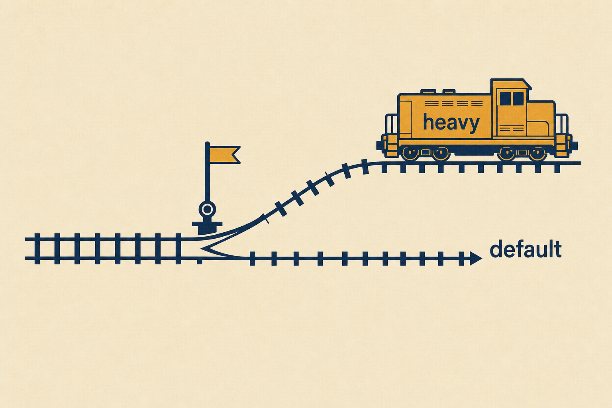

Plan: Worktree Management Panel, Garbage Collection & Worktree-by-Default Worker Isolation

Purpose
Give the operator full lifecycle control of git worktrees on a selected project: an inventory panel on /projects/:id that reconciles run records, git worktree list, and the scratch directory; on-demand merge of any run branch to the trunk (reusing Projects.Worktree.merge/2); per-worktree actions (merge, ahead/behind + diff stat, remove, remove-and-delete-branch); bulk garbage collection (clean merged, age-based sweep, git worktree prune) backed by an Oban cron worker. Additionally, make worktree isolation the default for orchestrator-spawned worker agents, so parallel agents never collide with the operator's working tree while the platform is being improved in parallel.
Problem
Worktree isolation exists (Projects.Worktree, run rows carry worktree_path/worktree_branch, a deterministic :merge step kind lands branches), but the operator has no management surface. Three concrete gaps: (1) no visibility — the UI shows only what workflow_runs rows say; nothing surfaces git worktree list, the scratch dir (/tmp/rb_worktrees/<run_id> by default), or worktrees orphaned by crashed runs, so DB and disk can silently disagree; (2) no on-demand merge — merging happens only when the workflow definition included a :merge step, so the normal review-first flow ends with an unmerged chip and no button, forcing a manual terminal merge of adw/<run_id>; (3) no garbage collection — Worktree.cleanup/1 deliberately keeps the branch, nothing sweeps old worktrees, no prune schedule, no branch deletion for landed adw/* branches; each worktree is a full checkout (plus its own _build once compiled), so disk and branch lists grow forever. A fourth gap compounds the first three: worker agents CRUD'd by an orchestrator only get worktree isolation when their project's isolation_mode is :worktree — the schema default is :direct, and a nil-project (platform) worker gets nil isolation — so by default parallel workers stomp the operator's tree.

Solution
Four layers, each building on the existing primitives. (a) Git plumbing: extend RepoBuilder.Projects.Worktree with pure, never-raising shell-outs — list/1 (parse git worktree list --porcelain), ahead_behind/3, diff_shortstat/3, delete_branch/2 (guarded to the adw/ prefix), prune/1. (b) Inventory context: a new RepoBuilder.Projects.WorktreeInventory module reconciles run records (via a new Workflows.list_worktree_runs/1), git's registry, and the scratch dir into typed Entry structs, and exposes merge/2 (wraps Worktree.merge/2 + Workflows.record_merge/2), remove/3, and gc/2. (c) UI: a Worktrees card on ProjectsLive :show, loaded with start_async (mount stays fast, matching the recent perf work), with per-row actions and bulk GC/prune buttons, all behind data-confirm for destructive ops. (d) Lifecycle defaults: a RepoBuilder.Workers.WorktreeGC Oban cron worker sweeps merged, aged worktrees daily; and worker isolation defaults flip to :worktree — new projects default to :worktree, nil-project orchestrator workers resolve isolation from a new config default, and the spawn tool accepts an explicit per-agent override. The non-git fallthrough in Worktree.checkout/2 ({:direct, root}) keeps the new default fail-safe everywhere.

Relevant Files
Existing Files
- existing
lib/repo_builder/projects/worktree.ex— the git primitive module; gainslist/1,ahead_behind/3,diff_shortstat/3,delete_branch/2,prune/1;merge/2,detect_trunk/1,cleanup/1, and the privatescratch_base/1are reused as-is. - existing
lib/repo_builder/workflows.ex— gainslist_worktree_runs/1;record_merge/2is reused by on-demand merge. - existing
lib/repo_builder/workflows/workflow_run.ex— schema already carriesworktree_path/worktree_branch/merge_status/merged_sha/merge_error; read-only here. - existing
lib/repo_builder_web/live/projects_live.ex—:showaction gains the Worktrees card,start_asyncinventory load, sixhandle_eventclauses, and an isolation-mode toggle. - existing
lib/repo_builder_web/components/project_components.ex—repo_healthshowsisolation: modeas static text today; the toggle lives next to it. - existing
lib/repo_builder/orchestrator/tools/agent_ops.ex—worker_dispatch_location/2(lines 561–571) is the isolation-resolution seam for orchestrator-spawned workers;create_agent/2gains the optional"isolation"arg. - existing
lib/repo_builder/orchestrator/tools/adw.ex— nil-project fallback (line ~257) picks up the configured isolation default. - existing
lib/repo_builder/projects/project.ex—isolation_modeEcto.Enum default flips:direct→:worktreefor new rows. - existing
lib/repo_builder/session/server.ex— already honoursopts[:isolation_mode]with a safe non-git fallthrough (line ~1437); no change expected, verify only. - existing
lib/repo_builder/workers/workflow_resume.ex— the pattern to copy for the GC worker (Oban cron,max_attempts: 1, idempotent reconcile). - existing
config/config.exs— gains theconfig :repo_builder, :worktree, ...block (scratch_base, GC knobs, worker isolation default) and the GC crontab entry besideWorkflowResume. - existing
test/repo_builder/projects/worktree_test.exs+worktree_merge_test.exs— tmp-git-repo fixtures to reuse for the new plumbing tests. - existing
test/repo_builder_web/live/projects_live_test.exs— existing show-page coverage that must stay green with the new card. - existing
ai_docs/typed-elixir-standard.md,BUILD_PROMPT.md§7/§8/§9,ai_docs/agentic-layer-adaptor.md— routed by.claude/commands/conditional_docs.mdfor this task (Oban, contexts, LiveView, adaptor).
New Files
- new
lib/repo_builder/projects/worktree_inventory.ex— the reconciling context: typedEntrystruct,list/1,merge/2,remove/3,gc/2. - new
lib/repo_builder/workers/worktree_gc.ex— Oban cron worker sweeping merged, aged worktrees across projects. - new
priv/repo/migrations/<ts>_default_project_isolation_worktree.exs— alterprojects.isolation_modecolumn default to'worktree'(existing rows untouched). - new
test/repo_builder/projects/worktree_inventory_test.exs— reconcile/merge/remove/gc against tmp git repos. - new
test/repo_builder/workers/worktree_gc_test.exs—Oban.Testing.perform_jobsweep coverage. - new
test/repo_builder_web/live/test_worktree_panel_test.exs—Phoenix.LiveViewTestintegration test for the panel and its events. - new
test/repo_builder/orchestrator/tools/agent_ops_isolation_test.exs— worker dispatch isolation-resolution matrix (or extend the existing agent_ops test file if one covers dispatch; decide at build time and note in Amendments).
Implementation Phases
IMPORTANT: Execute every phase and task step by step, in order, top to bottom.
Status markers: [] idle · [wip] in progress · [x] complete · [f] failed. All start as []; the Build Plan workflow updates them as it works.
[x] Phase 1: Git plumbing — extend Projects.Worktree
Add the read/maintenance primitives the inventory needs. Follow the module's existing conventions exactly: System.cmd/3 via the private git/2 helper, {:ok, _} | {:error, term} tagged tuples, never raise, @spec on every public function, precise return types (no bare map() — define @types).

1. list/1 — parse git worktree list --porcelain
[x]Add@type listed :: %{path: String.t(), head_sha: String.t() | nil, branch: String.t() | nil}and@spec list(String.t()) :: {:ok, [listed()]} | {:error, term()}.[x]Parse porcelain output: blocks separated by blank lines; fieldsworktree <path>,HEAD <sha>,branch refs/heads/<name>; detached/bare blocks yieldbranch: nil. The first block (the main working tree) is included — callers filter.[x]Non-git root returns{:error, :not_a_git_repo}(reusegit_repo?/1).
2. ahead_behind/3 and diff_shortstat/3
[x]@spec ahead_behind(String.t(), String.t(), String.t()) :: {:ok, {non_neg_integer(), non_neg_integer()}} | {:error, term()}viagit rev-list --left-right --count <trunk>...<branch>(behind = left, ahead = right; parse the two tab-separated integers).[x]@spec diff_shortstat(String.t(), String.t(), String.t()) :: {:ok, String.t()} | {:error, term()}viagit diff --shortstat <trunk>...<branch>; an empty diff returns{:ok, ""}.[x]A branch that no longer exists (deleted by hand) returns{:error, reason}— the inventory renders it as "branch gone", never crashes.
3. delete_branch/2 and prune/1
[x]@spec delete_branch(String.t(), String.t()) :: :ok | {:error, term()}viagit branch -D <branch>, guarded: refuse (return{:error, :not_an_adw_branch}) unless the branch starts with the existing@branch_prefix("adw/") — this function must never be able to deletedev/main.[x]@spec prune(String.t()) :: :ok— best-effortgit worktree prune, always:ok(mirrorscleanup/1's tolerance).[x]Make the privatescratch_base/1reachable for the inventory: add a public@spec scratch_base() :: String.t()wrapper (config:repo_builder, :worktree, :scratch_base, falling back toPath.join(System.tmp_dir!(), "rb_worktrees")— identical resolution to today's private helper).
4. Testing Strategy
Extend test/repo_builder/projects/worktree_test.exs using its existing tmp-git-repo fixture pattern (init a repo in tmp_dir, commit, checkout/2 a worktree). Edge cases: porcelain parse with detached HEAD, delete_branch prefix guard, ahead_behind on a branch with 0 and >0 commits, diff_shortstat on identical branches, all functions against a non-git dir.
[x]mix test test/repo_builder/projects/worktree_test.exs --warnings-as-errors— new plumbing green, old behaviour unchanged.[x]mix compile --warnings-as-errors && mix format --check-formatted && mix credo --strict— typed standard holds (specs on every new public fn).
[x] Phase 2: The reconciling inventory context — Projects.WorktreeInventory
A new context module that merges three sources of truth into typed entries and owns the on-demand merge/remove/gc operations. It calls Workflows for all DB access (it is not a Repo caller itself, honouring §8's context boundary) and Worktree for all git access.
1. Workflows.list_worktree_runs/1
[x]Add@spec list_worktree_runs(Ecto.UUID.t() | nil) :: [WorkflowRun.t()]: runs scoped byscope_by_project/2whereworktree_branchis not nil, newest first, limit 100.
2. The Entry struct and list/1
[x]typedstruct enforce: trueEntry:branch :: String.t(),path :: String.t(), and optional (enforce: false)run_id :: Ecto.UUID.t(),run_status :: atom(),merge_status :: :merged | :failed,merged_sha :: String.t(),on_disk? :: boolean()(default false),in_git? :: boolean()(default false),ahead :: non_neg_integer(),behind :: non_neg_integer(),shortstat :: String.t(),run_inserted_at :: DateTime.t().[x]@spec list(Project.t()) :: {:ok, [Entry.t()]} | {:error, term()}: (a)Workflows.list_worktree_runs(project.id)keyed by branch; (b)Worktree.list(project.root_path)filtered toadw/-prefixed branches (drop the main working tree and any non-ADW worktrees) → setsin_git?; (c)File.ls(Worktree.scratch_base())entries whose dir name matches a run id / existing path → setson_disk?(missing scratch dir ⇒ empty, not an error). Union all three keyed by branch (fallback key: path), so orphans in any single source still appear.[x]Enrich each entry withahead_behind+diff_shortstatagainstWorktree.detect_trunk/1— but cap enrichment at the 30 newest entries (git calls are ~2 per entry) and leave older ones un-enriched (nil ahead/behind renders as "—"). A dead branch's enrichment errors degrade to nils.[x]A non-gitroot_pathreturns{:ok, []}for a project with no worktree runs, else entries from run rows only (visibility even when disk is gone).
3. merge/2, remove/3, gc/2
[x]@spec merge(Project.t(), String.t()) :: {:ok, %{sha: String.t(), trunk: String.t()}} | {:error, term()}: delegate toWorktree.merge(project.root_path, branch: branch); on{:ok, %{sha: sha}}find the matching run (byworktree_branch) andWorkflows.record_merge(run, %{merge_status: :merged, merged_sha: sha}); on error record%{merge_status: :failed, merge_error: reason}when a run exists. No run found ⇒ still merge, skip recording.[x]@spec remove(Project.t(), Entry.t(), keyword()) :: :ok | {:error, term()}:Worktree.cleanup(%{repo: project.root_path, path: entry.path}); withdelete_branch: truealsoWorktree.delete_branch/2(prefix-guarded). Refuse ({:error, :unmerged}) when the entry is unmerged AND has commits ahead, unlessforce: true— losing unlanded agent work must be an explicit choice.[x]@spec gc(Project.t(), keyword()) :: {:ok, non_neg_integer()}: remove (with branch deletion) every entry whosemerge_status == :mergedand whose run is older thanopts[:days](default from configgc_after_days, default 7); finish withWorktree.prune/1. Returns the count removed. Idempotent; per-entry failures are logged and skipped, never abort the sweep.
4. Testing Strategy
New test/repo_builder/projects/worktree_inventory_test.exs on the tmp-git-repo fixture + DataCase (run rows need the DB). Edge cases: orphan on disk with no run row; run row whose worktree was hand-deleted (on_disk?: false); merge conflict path records :failed; remove refuses unmerged-ahead without force; gc skips young and unmerged entries and counts correctly; scratch_base override via app-env in the test.
[x]mix test test/repo_builder/projects/worktree_inventory_test.exs --warnings-as-errors— reconcile + operations green.[x]mix test test/repo_builder/projects --warnings-as-errors— whole projects context still green.[x]Tidewaveproject_evalsmoke:RepoBuilder.Projects.WorktreeInventory.list(project)against a real registered project returns{:ok, entries}(dev-server validation step for the builder).
[x] Phase 3: The Worktrees panel on ProjectsLive :show
A new card between "Recent runs" and the secrets card. The inventory loads via start_async so the show-page mount stays fast (consistent with the recent console mount-perf work — git shell-outs never block first paint). All destructive actions carry data-confirm. Also add the isolation-mode toggle so an operator can flip an existing :direct project to :worktree from the UI (Phase 5 changes only the default for new projects).
1. Async inventory assign
[x]Inapply_action(socket, :show, ...): assignworktrees: nil(renders "loading…") andstart_async(:load_worktrees, fn -> WorktreeInventory.list(project) end);handle_async(:load_worktrees, {:ok, {:ok, entries}}, ...)assigns the list; error/exit assigns[]plus a flash. Extract a privatereload_worktrees/1helper reused by every event below.
2. Panel markup
[x]Cardid="worktrees-panel", heading "Worktrees ·<count>", header buttons: Refresh, GC merged (data-confirmnaming the age threshold), Prune registry.[x]One row per entry (id={"wt-#{entry.branch}"}sanitized): branch (mono), run status, merge chip (reuse the existing merged/failed/unmerged chip idiom from the runs list),+ahead/−behind, shortstat title-attr, and badges fororphaned(on_disk?orin_git?without a run row) andmissing on disk(run row without disk/registry presence).[x]Per-row actions: Merge (hidden when already:merged;data-confirmnaming trunk), Remove (data-confirm; passes force), Remove + delete branch (data-confirmwarning the branch is destroyed). Empty state: "No worktrees for this project."
3. Event handlers
[x]"merge_worktree"(phx-value-branch) →WorktreeInventory.merge/2; flash "branchmerged @shaintotrunk" or the error; thenreload_worktrees/1and refreshruns(the chip changes).[x]"remove_worktree"/"remove_worktree_branch"(phx-value-branch) →remove/3withforce: true(the confirm dialog IS the explicit choice) anddelete_branch:false/true respectively; flash outcome; reload.[x]"gc_worktrees"→gc/2; flash "reclaimed N worktrees"; reload."prune_worktrees"→Worktree.prune/1; reload."refresh_worktrees"→ reload only.[x]"toggle_isolation"→Projects.update_project(project, %{isolation_mode: other}); re-assignproject; render the current mode as a clickable chip next to the existingrepo_healthisolation label.
4. Testing Strategy
New test/repo_builder_web/live/test_worktree_panel_test.exs (Phoenix.LiveViewTest + ConnCase): fixture registers a project over a tmp git repo, seeds a run row with a real provisioned worktree (via Worktree.checkout/2) and one orphan dir in a test-scoped scratch_base. Assert: panel renders both rows with correct badges; merge event lands the branch (assert merged_sha persisted + chip updates); remove event deletes the dir; gc reclaims the merged row; toggle flips isolation_mode. Keep projects_live_test.exs green (the async assign must not break existing show-page tests — render_async/1 where needed).
[x]mix test test/repo_builder_web/live/test_worktree_panel_test.exs --warnings-as-errors— panel behaviour proven end-to-end.[x]mix test test/repo_builder_web/live/projects_live_test.exs --warnings-as-errors— no regression on the existing show page.
[x] Phase 4: Oban cron garbage collection — Workers.WorktreeGC
Automate the sweep so the scratch dir cannot grow unbounded. Modeled on Workers.WorkflowResume: cron-scheduled, max_attempts: 1, idempotent, and safe to run any time because WorktreeInventory.gc/2 only touches merged-and-aged entries.
1. Config block
[x]Add toconfig/config.exs:config :repo_builder, :worktree, scratch_base: nil, gc_enabled: true, gc_after_days: 7, worker_isolation_default: :worktree— with comments;scratch_base: nilpreserves today's tmp-dir fallback. (Theworker_isolation_defaultkey is consumed in Phase 5.)[x]Extend the Oban crontab:{"30 3 * * *", RepoBuilder.Workers.WorktreeGC}beside the existingWorkflowResumeentry.
2. The worker
[x]use Oban.Worker, queue: :default, max_attempts: 1;perform/1returns:okimmediately whengc_enabledis false.[x]Public@spec sweep() :: non_neg_integer()(mirrorsWorkflowResume.reconcile/0): for every project inProjects.list_projects()with a gitroot_path, runWorktreeInventory.gc(project, []), sum counts; per-project failures log a warning and continue.[x]Emit oneLogger.infosummary line ("worktree gc reclaimed N across M projects") so the sweep is visible in system logs.
3. Testing Strategy
New test/repo_builder/workers/worktree_gc_test.exs with Oban.Testing's perform_job/3: seed a project + one merged-and-old run/worktree and one fresh unmerged one; assert the sweep removes exactly the first, returns 1, and is a no-op on second run; assert the gc_enabled: false kill switch. Backdate the run row's inserted_at directly for the age case.
[x]mix test test/repo_builder/workers/worktree_gc_test.exs --warnings-as-errors— sweep semantics proven.[x]Tidewaveproject_evalsmoke:RepoBuilder.Workers.WorktreeGC.sweep()runs green on the dev node.
[x] Phase 5: Worktree isolation by default for orchestrator-spawned workers
Close the fourth gap: agents CRUD'd/spawned by an orchestrator should run isolated by default. Resolution order for a worker's isolation becomes: explicit spawn arg → the worker's project isolation_mode → config worker_isolation_default (ships :worktree). The schema default for new projects flips to :worktree; existing projects keep their stored value (flippable via the Phase 3 toggle). Everything stays fail-safe because Session.Server + Worktree.checkout/2 already fall through to direct on a non-git cwd (e.g. a managed orchestrator workspace).
1. Schema default + migration
[x]Projects.Project: change the Ecto.Enum defaultisolation_mode: :direct→:worktree; update the moduledoc.[x]Migration altering the column default to'worktree'(modify :isolation_mode, :string, default: "worktree") with a comment that existing rows are deliberately untouched; provide the symmetricdown.
2. Dispatch resolution in the orchestrator tools
[x]Add a shared@spec default_isolation() :: :direct | :worktreehelper (read configworker_isolation_default, default:worktree) — place it inProjects(orWorktree) so both tool modules and future callers share one reader.[x]agent_ops.worker_dispatch_location/2: the nil-project clause returns{orchestrator_working_dir(...), default_isolation()}instead of{..., nil}; the project clause keepsproject.isolation_mode(a stored:directremains an explicit operator choice); the project-not-found clause also usesdefault_isolation().[x]create_agent/2(and its spawn path) accepts an optional"isolation"arg: validate against~w(direct worktree)viaString.to_existing_atom-safe matching (invalid value ⇒{:error, reason}tool result, never crash); when present it wins over both project mode and the default. Document the arg in the tool's schema/description so the orchestrator LLM can use it.[x]orchestrator/tools/adw.exline ~257: the nil-project fallback pair becomes{nil, default_isolation()}; a resolved project keeps mirroring its mode (unchanged).[x]Verify (read-only)Session.Server's worktree provisioning (line ~1437) and the orchestrator brain launch (orchestrator/server.ex:launchopts): the orchestrator's own session must NOT gain isolation — only workers; confirm noisolation_modeis threaded there and add a comment guarding the distinction.
3. Testing Strategy
New test/repo_builder/orchestrator/tools/agent_ops_isolation_test.exs (or extend the existing agent_ops coverage — decide at build time): the resolution matrix — (project :worktree ⇒ worktree), (project :direct ⇒ direct), (nil project ⇒ config default), (explicit arg beats all), (invalid arg ⇒ error result), (config override to :direct respected). Plus a changeset test that a new Project defaults to :worktree, and a migration round-trip via mix ecto.migrate/ecto.rollback in dev. Sweep the whole suite: session-runtime and workflow-engine tests that implicitly assumed direct-mode nil-project workers must stay green (the non-git tmp cwds used in tests fall through to direct, which is why this stays back-compatible — verify, and fix any test that registered a real git repo and now provisions a worktree unexpectedly).
[x]mix test test/repo_builder/orchestrator --warnings-as-errors— resolution matrix + no orchestrator regressions.[x]mix ecto.migrate && mix ecto.rollback --step 1 && mix ecto.migrate— migration is reversible.[x]mix test --warnings-as-errors— full suite green under the new default.
Validation Commands
Execute these commands to validate the entire plan is complete:
[x]mix compile --warnings-as-errors— zero warnings across all new modules.[x]mix format --check-formatted— canonical style.[x]mix credo --strict— includes the@spec-on-every-public-function gate for all new code.[x]mix test --warnings-as-errors— full suite (existing ~1,777 + new worktree/inventory/panel/GC/isolation tests) green.[x]mix dialyzer— success typing holds for the new typed structs and tagged-tuple contracts.[x]Manual smoke (dev server + Tidewave): register a tmp git repo as a project, launch a worktree run, then on/projects/:idobserve the row, click Merge, confirm the merged chip +git logshows the--no-ffmerge commit, then GC merged reclaims it.
Questionables
On-demand merge checks out the trunk in the operator's own working tree — is that acceptable?
Worktree.merge/2 (pre-existing, used by the :merge step since issue-adw-non-iso-merge) runs git checkout <trunk> + merge --no-ff in repo_root, then restores the previous branch only on conflict. If the operator has uncommitted changes on another branch in that tree, the checkout can fail (git refuses) — which surfaces as a clean {:error, reason} flash, never data loss. This plan deliberately reuses the existing primitive rather than introducing a second merge strategy (e.g. merging inside a temporary worktree); if the checkout-in-operator-tree behaviour proves annoying in practice, a follow-up can rework merge/2 to merge via a detached temporary worktree without touching the operator's checkout.
Existing projects keep :direct after the default flips — silent inconsistency?
Deliberate: mutating stored operator choices in a migration would be surprising. The Phase 3 toggle makes flipping a one-click action, and the projects UI already displays the mode in repo_health. New projects and nil-project workers get the safe default.
Worktree-by-default for nil-project workers — what directory do they isolate from?
The orchestrator's working_dir. When that is a managed (non-git) workspace, Worktree.checkout/2 falls through to {:direct, root} — identical to today. When the orchestrator is bound to a real git checkout (the "improving the platform on itself" case that motivated this plan), workers now branch instead of stomping dev. The fail-safe fallthrough is what makes the default flip low-risk.
Per-entry git calls in the inventory — mount-time cost?
Bounded three ways: the panel loads via start_async (never blocks first paint, consistent with the console mount-perf work), enrichment is capped at the 30 newest entries, and list_worktree_runs/1 is limited to 100 rows. No caching layer in v1; add one only if a real project shows lag.
GC deletes branches — can landed work be lost?
GC only touches entries whose run has merge_status == :merged, i.e. the commits are already on the trunk; deleting adw/<run_id> then loses nothing. Unmerged worktrees are never GC'd regardless of age — reclaiming those is always a manual, confirmed UI action.
Elixir worktrees don't inherit _build/deps — cold-compile tax per worktree?
Out of scope here (this plan manages lifecycle, not build caching). Noted as future work: seeding a new worktree's _build/deps from the parent checkout, or a shared MIX_BUILD_PATH strategy, would cut the first-gate cost dramatically for Elixir target repos.
Notes
Context. This plan closes the operator-facing half of the worktree story. The primitives all exist: Projects.Worktree (checkout/cleanup/merge/detect_trunk, issue-adw-non-iso-merge), run-row handoff columns (worktree_path/worktree_branch/merge_*), the Runner's deterministic :merge step kind, and session-runtime provisioning honouring opts[:isolation_mode]. What was missing is management: visibility, on-demand merge, reclamation, and a sane default.
Design decisions. (1) WorktreeInventory is a pure orchestration context — git via Worktree, DB via Workflows/Projects — keeping the §8 "contexts are the only Repo callers" boundary intact. (2) The union-reconcile (rather than intersect) surfaces orphans in any source, which is the whole point of the panel. (3) The GC worker copies WorkflowResume's shape (cron + idempotent public function) so operational reasoning transfers. (4) Isolation resolution is a strict precedence chain with the fail-safe non-git fallthrough carrying all the back-compat weight — that fallthrough is why tests and managed workspaces survive the default flip unchanged.
Rejected approaches. A DB-only panel (no git/disk reconcile) — cheap but blind to exactly the drift that motivates the feature. Overriding a project's stored :direct with the new config default — surprising inversions of explicit operator choices. Merging via a PR flow (push + gh pr create) — right for GitHub-remoted repos but out of scope; Worktree.merge/2 already handles local-only repos, which is the primary self-improvement use case.
Dependencies. No new hex packages. Oban, LiveView start_async, and System.cmd/3 git shell-outs are all established in-repo patterns.
Future work. Worktree _build/deps seeding for Elixir repos (see Questionables); a disk-usage column (du -s is too slow to run per-row synchronously — needs async per-entry hydration); pushing adw/* branches and opening PRs for remoted projects; wiring the panel's counts into the console's project header as an at-a-glance badge.
Amendments
2026-07-05T12:46:14Z — Initial plan (no amendments yet)
Created with PLANF3_IMAGES unset → stock placeholder images per policy.
2026-07-05T13:54:05Z — Built: all 5 phases green (1,838 tests, full gate)
Implemented by the Build Plan workflow. Deviations from the letter of the plan:
(1) the isolation-mode toggle lives in the Worktrees panel header rather than beside the
repo_health label — same behaviour, better context; (2) the isolation
resolution chain was extracted as the public, pure
Projects.resolve_worker_isolation/2 (instead of a private helper in
agent_ops) so the matrix is directly testable; (3) the per-worker override is stored on
the agent's config["isolation"] at create time — dispatch-time
command_agent args were not extended; (4) scratch-dir orphan attribution
verifies the worktree's .git pointer targets the project's repo, since the
scratch base is shared across projects; (5) gc eligibility additionally requires
something physical to reclaim (on_disk? or in_git?) so run-row-only
memories are not re-counted every sweep; (6) the committed orchestrator tool-manifest
snapshot was regenerated (intentional create_agent schema change) and the
Project-defaults test updated to the new :worktree default. Runtime smoke:
register → checkout → inventory (+1 ahead) → merge to main → gc, all verified via
mix run against the dev node.